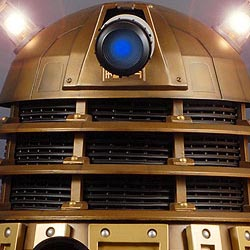

| Home | The Doctors | The Companions | The Villans |
|
|||
EveEve is an android resembling a woman built by Hr'oln, last of the Cirranins in the novel The Last Dodo, to prevent the extinction of races like the Cirranins, but she does this by unorthodox means. She puts Hr'oln and other last ones in suspended animation, then puts all but Hr'oln in MOTLO (Museum Of The Last Ones). However, she and a member of the Earth team named Frank are secretly cloning the creatures and selling them to the highest bidder. The Doctor and Martha arrive at the museum and investigate the poaching. After Eve captures the Doctor, last of the Time Lords, Martha frees him but accidentally teleports the Earth creatures back to Earth. During the ensuing chaos, Eve hatches upon a plan to get the cloned dodos to lay bomb eggs, with sabretooth cats and Megalosauri attacking people to keep them off the scent, so that she can stop having to note down every Earth extinction. She plans to destroy every planet in the universe this way. When the Doctor points out this isimpossible, she tries to shoot him. The gun backfires, killing her and revealing that she is an android. After her plans are stopped, and Hr'oln is freed, Hr'oln promises to rebuild her. She is immune to psychic paper. |